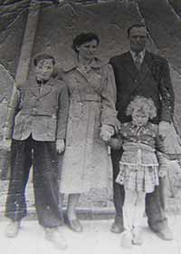

Our Family
TeaJoy started because one big family really loved tea. Elliot and Philomena Jackson, born and raised in England, moved to the US once their land was taken over by the pirates in 1750. They had no professional skills, and no money. But they loved tea, and decided to share that love with the others.
Philomena often says, "Tea is not just for we Englanders, why can't everyone enjoy teatime?" They began the first TeaJoy location in a shed in their backyard in Moorhead, MN. Now TeaJoy has six locations throughout the Midwest, and is expanding

Our Values
Joy
Drinking tea should bring a smile to anyone's face. Here at TeaJoy, we can help you find your perfect cup of tea. No matter how you like it, we can do it, or at least try! A visit to TeaJoy should be the bright spot in your day. We'll give you a free drink if you aren't greeted with a "Hello!" when you walk in the door.
Respect
Respect others. We will respect you, no matter how you're day is going. Tired? Cranky? Need a break from life? We've got just the thing to help you out. Yep, you guessed it. It's tea.
Honesty
TeaJoy teas bring you the best in organic, flavor-filled ingredients. We work with local farmers, and carefully test all our ingredients so that your tea is just that. Delicious, pure, homegrown tea.
Spreading the Joy
Here at TeaJoy, we donate 5% of all profits to Feed My Starving Children, a non-profit organization that packs and sends meals to countries to decrease world hunger. Every cup of TeaJoy you drink helps change the world.
TeaJoy wants to make a difference. We're doing that by giving each of our employees one week of paid vacation time to spend impacting the world and blessing others in any way they choose.